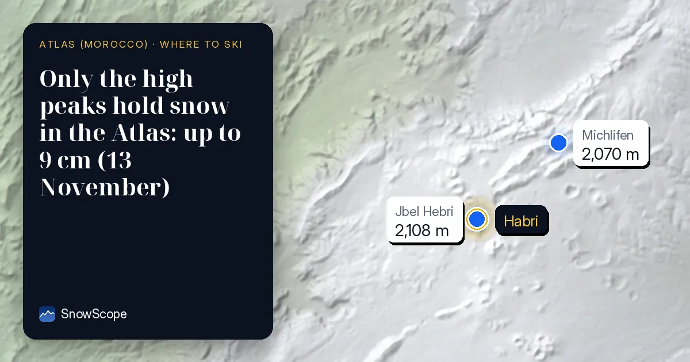
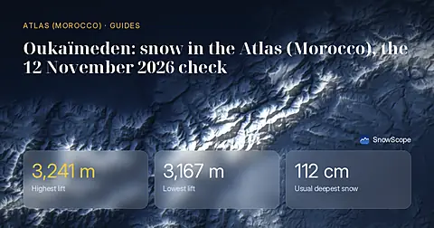

Only the high peaks hold snow in the Atlas: up to 9 cm (13 November)
On Friday 13 November, snow in the Atlas is confined to the highest ground. None of the three ski resorts—Habri, Michlifen, or Oukaïmeden—has any snow on its slopes. The deepest snow lies only on the highest summits: about 40 km² of snowy terrain, with up to 9 cm of depth in places.
See the live snow forecast for Habri in the SnowScope appSnow depth, powder alerts and the 3D map, free.
Where the snow is now
Habri holds no snow on its upper slopes. Michlifen has no snow from its base at 1,870 m to its peak at 2,070 m. Oukaïmeden, the highest of the three at 3,258 m, also shows no snow on its slopes today.
The snow that remains across the Atlas is scattered only on the very high peaks and ridges—ground above where any of these resorts climb. At 2,929 m, the mid-height of Oukaïmeden, there is still nothing. Snow sits only on summits well above 3,000 m.
| Resort | Snow depth | New snow, 72 h | Coming, next days | Top |
|---|---|---|---|---|
| Habri | 0 cm | 0 cm | 0 cm | 2,108 m |
| Michlifen | 0 cm | 0 cm | 0 cm | 2,070 m |
| Oukaïmeden | 0 cm | 0 cm | 0 cm | 3,258 m |

Snow is melting fast
Three days ago, on 11 November, 50 km² of the Atlas was snow-covered. By Friday, that had shrunk to 40 km². The forecast for 16 November shows just 30 km²—a steady loss as November warmth eats away at thin early-season snow.
This is typical for the Atlas in mid-November. The dry mountains of North Africa hold snow poorly at this time of year. Snow cover comes and goes with each storm; between storms, the sun and the wind do their work fast.
What is normal for November?
History shows this is not unusual. Looking back at the past 46 winters, the typical snow depth on this date at 1,970 m near Michlifen was 0 cm. At Oukaïmeden's mid-height of 2,929 m, the usual November depth was also 0 cm. A bare early winter is the norm for the Atlas.
Today's 9 cm on the highest summits is actually thinner than what has been seen in 43 of the past 46 years at the same elevation. Early-season snow here sits on the edge of survival.
What comes next
No fresh snow is forecast at any of the three resorts until 16 November or later. When the next storm does arrive, Oukaïmeden will have the best chance to catch and hold snow because of its height. Its peak at 3,258 m rises far above Habri (2,108 m) and Michlifen (2,070 m), so it stays in the cold air longer.
Habri and Michlifen will need a colder storm—one that pushes the freezing level low enough—to turn new rainfall into lasting snow. For now, the forecast shows continued decline through 16 November: the Atlas is heading into a dry spell, and the small snowpack will continue to retreat.
What this means for the mountains
Early-season snow in the Atlas is water stored in the mountains. This thin 9 cm layer on the high peaks will eventually feed the rivers and reservoirs of the plains below when spring comes. But in November, before the deep winter snow arrives, the Atlas holds very little of that precious water.
The snow you see on SnowScope is a snapshot taken on data day 13 November. Forecasts change fast in this part of the world. The dry mountains and thin cover mean conditions can shift in hours.
Tips for skiers
- Do not assume a resort is open or has ski-able snow just because SnowScope shows some snow nearby. Check the resort's own website for lift status and opening dates.
- Any snow on the Atlas slopes right now is both thin and sparse. If you are on the mountain, stay on marked pistes: grass and rocks hide just beneath a few centimetres of cover.
- The next significant snow event may be days away. Look at the SnowScope map again the day before you travel to see if conditions have changed.
- Oukaïmeden is the highest of the three resorts and will keep snow longest. Plan a visit there if you want the best early-season chance.
- Set a snow alert in the SnowScope app to know when fresh snow arrives at Habri or Michlifen—the signals will tell you when it is time to return.
About these numbers
Resort snow depths are the deepest snow on the resort's upper slopes on the date shown; they are estimates for an area, not a measurement at one point. Forecasts can change. Always read the official avalanche bulletin before going off-piste.
Cite this report
For research, teaching or the press: the numbers and charts are free to reuse under CC BY 4.0 with this citation.
SnowScope (2026), Only the high peaks hold snow in the Atlas: up to 9 cm (13 November), https://snowscope.app/blog/en/2026/11/atlas-morocco-atlas-snow-check-13-november-2026.html, accessed 2026-11-13
SnowScope (Atlas Labs). (2026, November 13). Only the high peaks hold snow in the Atlas: up to 9 cm (13 November). SnowScope snow reports. https://snowscope.app/blog/en/2026/11/atlas-morocco-atlas-snow-check-13-november-2026.html
BibTeX
@misc{snowscope2026atlasmoroccoatlassnowche,
author = {{SnowScope (Atlas Labs)}},
title = {Only the high peaks hold snow in the Atlas: up to 9 cm (13 November)},
year = {2026},
month = nov,
howpublished = {\url{https://snowscope.app/blog/en/2026/11/atlas-morocco-atlas-snow-check-13-november-2026.html}},
note = {Published 2026-11-13 13:02 UTC; accessed 2026-11-13}
}· CC BY 4.0 · Methods, data and tools →
Habri: snow and temperature by height, this winter vs last (tools) →
Follow Habri
Free: a message when fresh snow is coming, and the forecast every morning.
More snow reports

A practical notebook on Oukaïmeden in the High Atlas: when snow usually comes, how much, which slopes to aim for and how to get there from Marrakesh.

Michlifen, near Ifrane, has snow in short episodes rather than a season. What 46 past winters show, why the usual depth is zero, and how to be there on the right days.

No snow yet at Oukaïmeden on 12 November. The Atlas peaks sit bare; the winter season typically peaks in March with 58 cm at the top.